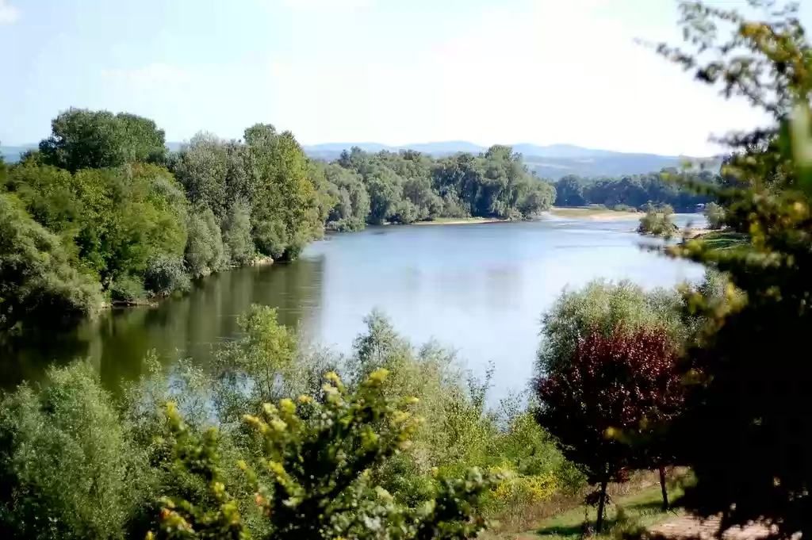

SRBIJA
Reka Morava ili Velika Morava nastaje spajanjem Zapadne Morave i Južne Morave kod Stalaća. Uliva se u Dunav na prostoru između Smedereva i Kostolca.
Morava je zajedno sa Zapadnom Moravom, najveća srpska reka. Dužina Velike Morave je 185 km, sa Zapadnom Moravom je 493 km.
Nekada je ova reka bila višestruko duža, ali je zbog regulacije rečnog korita i melioracionih radova danas učinjena kraćom. Najudaljeniji izvor vode
za moravski sliv je reka Ibar, desne i najveća pritoka Zapadne Morave. Zajedno kao sistem Ibar – Zapadna Morava – Velika Morava predstavljaju rečni
sistem dužine 550 km, najduži na Balkanu.
Površina sliva Velike Morave je 6126 km², a celog moravskog sistema 37.444 km², što je 42,38% od površine Srbije. Velika Morava protiče najplodnijim
i najgušće naseljenim područjem centralne Srbije, zvanim Pomoravlje, nastalim na mestu zaliva nekadašnjeg Panonskog mora koje se isušilo pre oko
200.000 godina. Negde na polovini dužine doline nalazi se Bagrdanska klisura.

Pritoke Velike Morave su: Jovanovačka reka, Crnica, Ravanica, Resava i Resavica, Kalenićka reka, Lugomir, Belica, Osaonica, Lepenica, Rača i Jasenica.
Pre ulivanja u Dunav, Velika Morava se račva, čineći 47 km dug rukavac pod nazivom Jezava, koji se uliva u Dunav odvojeno pošto se prethodno spoji sa
rekom Raljom.
Velika Morava je primer reke koja meandrira i uobičajena je pojava da Morava posle poplave promeni tok ostavljajući na mestu prethodnog korita jezera.
Danas je Velika Morava je plovna svega 3 km od ušća, a u istoriji je bila plovna sve do Ćuprije. U srpskoj istoriji, njena dolina je postala kolevka
savremene srpske države na početku 19. veka , tzv. Moravska Srbija. Mnoge su pesme ispevane koje slave Moravu i njenu plodnost, ali njenu zlu ćud i
vodoplavnost.